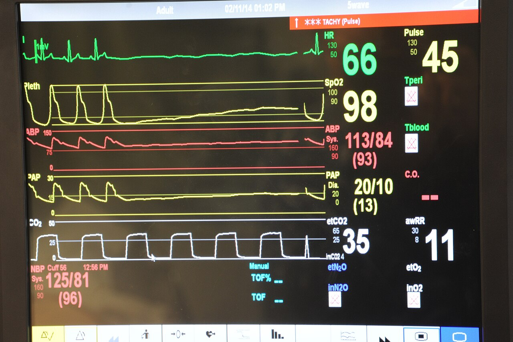
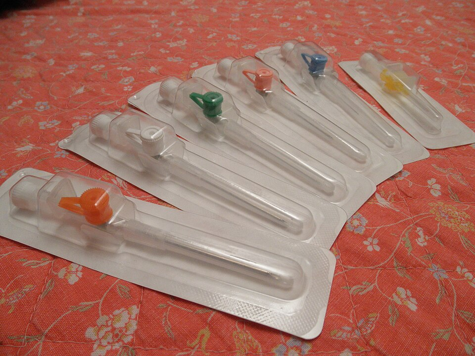

Página 2 · Hemorragia puerperal
Os primeiros 60 segundos
Antes de saber por que ela sangra, o que as suas mãos fazem no primeiro minuto?
Estabilizar e investigar ao mesmo tempo
O primeiro erro conceitual que a banca adora punir é o pensamento em fila: “primeiro descubro a causa, depois trato”. Na hemorragia puerperal a lógica é outra — a estabilização hemodinâmica corre em paralelo à investigação da causa, nunca em sequência. Enquanto uma parte da equipe procura por que a paciente sangra, a outra já está ressuscitando. Na prática, isso é concreto: dois acessos venosos periféricos calibrosos, reposição volêmica e acionamento do banco de sangue — tudo disparado ao mesmo tempo em que se busca a causa. A palavra que carrega esta abordagem é enquanto: você repõe volume enquanto revisa o canal, aciona o banco enquanto massageia o útero.
O que realmente mata: o retardo
Existe uma frase que resume o prognóstico desta emergência inteira: o que mata na hemorragia puerperal é o retardo do tratamento. Não é a falta de recurso sofisticado — é a demora. Postergar a conduta, esperar “para ver se melhora”, encadear passos que deveriam ser simultâneos: é isso que leva às complicações graves. Se demorar, ela morre. Esse é o motivo pelo qual todo o manejo é organizado como uma escada que se sobe rápido, degrau por degrau, sem parar em nenhum.
O índice de choque — a ferramenta de decisão rápida
Como transformar “ela parece mal” em uma decisão objetiva de abrir protocolo? Com o índice de choque: a frequência cardíaca dividida pela pressão arterial sistólica — FC / PAS. Não é exclusivo da obstetrícia, mas é muito usado nela e cai em várias questões. A lógica fisiológica por trás dele é o que o torna poderoso: no choque, a FC sobe antes de a PA cair. O organismo compensa taquicardizando para manter a pressão, e só quando essa compensação se esgota é que a PA despenca. Por isso a razão FC/PAS captura a deterioração antes de a hipotensão franca aparecer — ela lê o “choque compensado”, quando ainda dá tempo.
Índice de choque
FC ÷ PASCortes: ≥ 0,9 acende o alerta precoce (âmbar) · ≥ 1,0 acende o risco de transfusão (vermelho). Atalho sem conta: se a FC > PAS, a razão já passou de 1.
Os cortes: 0,9, 1,0 e o atalho sem conta
O gatilho numérico tem duas leituras que a banca pode cobrar, e vale saber as duas. O índice de choque ≥ 0,9 já sinaliza risco de transfusão — é o alerta mais precoce e sensível, da literatura internacional do obstetric shock index. A diretriz brasileira (Febrasgo) usa o corte um pouco mais alto: ≥ 1,0 para “risco de necessidade de transfusão”. Quanto maior a relação, maior a probabilidade de transfusão — e mais maciça ela tende a ser. E existe um atalho de prova que dispensa a conta: se a FC materna estiver maior que a PA sistólica, a razão já passou de 1 — abra o protocolo, avise a hemodinâmica e o banco de sangue. É paciente de risco para transfusão, e a decisão precisa ser rápida.


Correlato de duas peças: o material que sustenta a reposição (calibre) e o dado que alimenta o índice de choque (FC e PAS na tela).
Monitor: PO1 J. Stenberg / U.S. Navy, domínio público (via Wikimedia). Cateteres: MERRF, CC0 (via Wikimedia Commons).
Quiz — fixação
Puérpera com sangramento ativo: FC 120 bpm, PAS 100 mmHg. Sobre o índice de choque, assinale a correta:
- B — a virada. 120/100 = 1,2 — cruza os dois cortes (0,9 e 1,0) e cai na faixa “leve” (1,0–1,3). Mesmo com PAS “normal” de 100, a FC maior que a PAS já sinaliza choque compensado; o índice pega o que a pressão isolada esconde.
- A. Inverte a conta (faz PAS/FC em vez de FC/PAS) e conclui que está tudo bem — justamente o que o atalho “FC > PAS → passou de 1” evita.
- C. O índice não é exclusivo da obstetrícia, mas é muito usado nela e cobrado. Descartá-lo por especialidade ignora a ferramenta prática.
- D. Olhar só a PA é o erro que o índice existe para corrigir — a FC sobe antes de a PA cair, então “100 mmHg normal” mascara o choque compensado.
Sobre a conduta inicial na hemorragia puerperal, o que está correto?
- B — a virada. Ressuscitar e investigar são simultâneos — “enquanto” é a palavra-chave. Esperar a causa para agir custa a janela em que dá para salvar.
- A. É o pensamento em fila que a banca pune. Sequenciar (causa → tratamento) atrasa a reposição e mata pelo retardo.
- C. O que mata é o retardo do tratamento, não a falta de UTI. Buscar uma causa estrutural sofisticada ignora que o determinante é a demora da conduta.
- D. Condicionar o banco de sangue a um volume confirmado ignora que a instabilidade já indica ação — e o índice de choque aciona transfusão sem esperar medir 1000 mL.
Estabilizada e com o protocolo aberto, falta a pergunta central da investigação: por onde esse sangue está saindo? Toda hemorragia puerperal escapa por um de quatro caminhos — os 4 “Ts”.